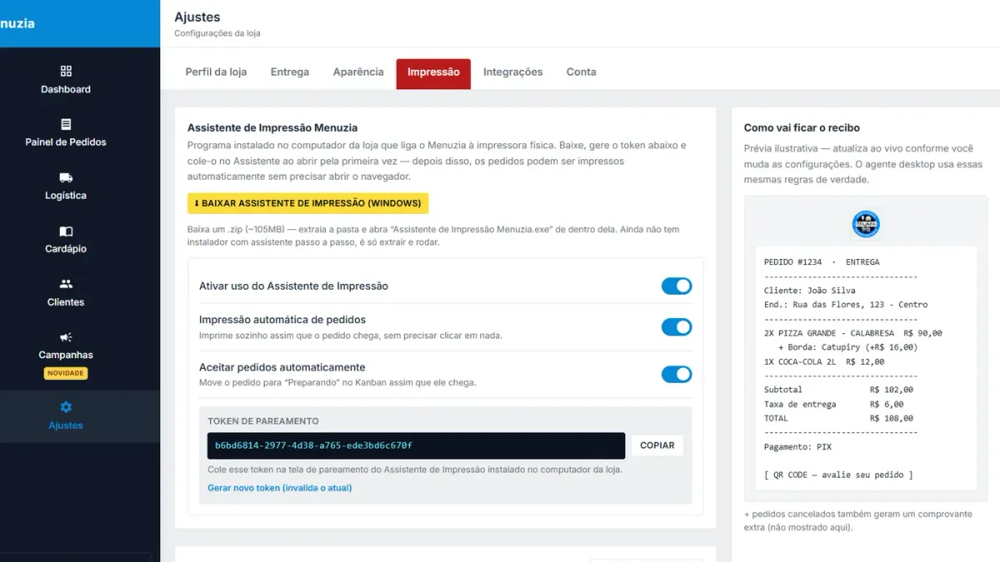

Melhor impressora térmica para delivery: como escolher em 2026

Não existe "a melhor impressora térmica" — existe a impressora certa para o seu volume de pedidos e para o lugar onde ela vai ficar. Este guia mostra os 5 critérios que importam na hora de escolher uma impressora térmica para delivery, sem cair em propaganda de marca.
1. Largura do papel: 58mm ou 80mm?
| 58mm | 80mm | |
|---|---|---|
| Preço da impressora | Menor | Maior |
| Leitura na cozinha | Apertada, quebra linha | Confortável |
| Pedido com muitos adicionais | Fica comprido | Fica organizado |
| Indicado para | Até ~20 pedidos/dia | Operação diária de delivery |
Recomendação: se o delivery é o negócio principal, vá de 80mm. O cozinheiro lê o pedido de longe e o "sem cebola" não se perde no meio do papel.
2. Conexão: USB, rede ou Bluetooth
- USB: a mais simples e estável. Impressora do lado do computador. Ideal para a maioria.
- Rede (Ethernet/Wi-Fi): para quando a cozinha fica longe do balcão. Precisa de IP fixo para não "sumir" depois que o roteador reinicia.
- Bluetooth: prática para imprimir pelo celular, mas perde conexão com facilidade. Boa como reserva, ruim como principal.
3. Guilhotina (corte automático)
Parece luxo, mas em sexta-feira com 40 pedidos ninguém quer rasgar papel na mão. Impressora com guilhotina corta o cupom sozinha no fim de cada pedido. Para delivery, considere obrigatório.
4. Velocidade
Algo entre 150 e 250 mm/s já é mais do que suficiente para delivery. Acima disso é para supermercado. Não pague a mais por velocidade que você não vai usar.
5. Driver para Windows e assistência
Antes de comprar, entre no site do fabricante e confirme que existe driver para a sua versão do Windows. Marcas conhecidas no Brasil (Elgin, Bematech, Epson, Daruma, Tanca, Knup, Control iD) têm driver e assistência técnica fácil de achar. Impressora importada sem marca é barata até dar o primeiro problema.
Quanto custa?
De forma geral, modelos 58mm de entrada custam bem menos que os 80mm com guilhotina, que são o padrão de mercado para delivery. A bobina é o custo recorrente: compre em caixa, sai muito mais barato do que unidade.
Funciona com o meu sistema de pedidos?
Se a impressora tem driver para Windows, ela funciona com o Assistente de Impressão do Menuzia, que imprime o pedido automaticamente assim que ele chega. O passo a passo está em como configurar impressora térmica para delivery.
E se a sua cozinha prefere tela em vez de papel, veja o que é KDS e quando ele vale mais que a impressora.
Perguntas frequentes
Impressora térmica 58mm serve para delivery?
Serve para começar ou para volume baixo. Para delivery como negócio principal, a de 80mm é mais legível e organiza melhor pedidos com muitos adicionais.
Preciso de impressora fiscal para imprimir pedido?
Não. Para imprimir a comanda do pedido basta uma impressora térmica não fiscal. A nota fiscal é emitida por outro processo, conforme o regime da sua empresa.
Impressora Bluetooth é boa para delivery?
É boa como reserva ou para quem imprime pelo celular, mas perde conexão com mais facilidade. Para uso diário, USB ou rede são mais estáveis.
Pare de pagar comissão por pedido
Tenha seu cardápio digital próprio por R$67/mês fixo. Nós configuramos pra você e damos todo o suporte técnico.
Criar Meu Cardápio Agora →